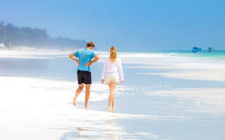

Do you have a dream vacation? Are you adventurers but you feel kind of stack?
This is why we are here to guide you to make your dreams come true.
Happy Trails Travel Agency is dedicated to offer the best services possible to the satisfaction of our clients.
We are the leading travel agency in Africa offering you a variety of destinations such as tropical destinations
or wildlife destinations. We understand that everyone has a different taste and this becomes our driving motive.
Your budget is also taken into consideration through our professional team of advisers
to make sure you get the best out it.
We can go as low or as high as your budget allows us. We got you.Click here to see more about us
Here is a list of our popular destinations:
Watamu beach, Kenya

Watamu beach is one of the best Kenyan destination sites located at the Malindi Marine Reserve Park.
It is commonly known for its beautiful coral creation.
It is also popular for its shallow banks that makes it convenient for sports such as swimming.
There are several resorts around the area that makes you feel at home.
Some of these resorts include: Ocean sports resort, Medina palms,Zawadi residence,simba house among others.
Kruger national park, Aouth Africa
 basically one of the largest national parks in Africa.
It is popularly known for for its wide wildlife variety including the big five.
Its excellent road network allows ease of accessibility even with common two-wheeled vehicles.
basically one of the largest national parks in Africa.
It is popularly known for for its wide wildlife variety including the big five.
Its excellent road network allows ease of accessibility even with common two-wheeled vehicles.
Beyin beach, Ghana
 If you are a fun of fishery, then this is the place to be.
The scene is usually magical especially in the evening as the fishermen return from their days work.
If you are a fun of fishery, then this is the place to be.
The scene is usually magical especially in the evening as the fishermen return from their days work.
Maasai mara game reserve, Kenya
 It is named in honor of the Maasai people who are believed to draw their courage from the lions in the reserve.
It has an exceptional population of the big cats: lions, leopards and cheetahs.
The large herds of strong buffaloes and wildbeasts also attracts a lot of tourists.
It is named in honor of the Maasai people who are believed to draw their courage from the lions in the reserve.
It has an exceptional population of the big cats: lions, leopards and cheetahs.
The large herds of strong buffaloes and wildbeasts also attracts a lot of tourists.